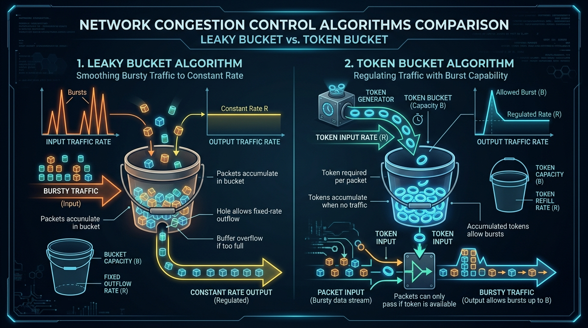

Learn the principles of network congestion, Open-Loop vs Closed-Loop control, and traffic shaping algorithms (Leaky Bucket, Token Bucket, RED, and Choke Packets).
Congestion occurs when the amount of data injected into a network by source hosts exceeds the handling capacity of intermediate routers and links. When router buffers overflow, packets are dropped, leading to retransmissions which worsen congestion!
The Leaky Bucket Algorithm shapes bursty traffic into a **smooth, constant-rate output stream**, like a bucket with a small hole at the bottom.
The Token Bucket Algorithm allows **bursty traffic up to a maximum burst size**, providing flexibility while enforcing average rate limits.

| Feature | Leaky Bucket | Token Bucket |
|---|---|---|
| Output Rate | Strictly constant rate (Smooths out bursts) | Allows bursty transmission up to token capacity |
| Packet Dropping | Drops packets if bucket overflows | Discards tokens if bucket is full (packets saved) |
| Storage Element | Stores Data Packets in queue | Stores Tokens in bucket |
| Flexibility | Rigid (no burst support) | Flexible (supports QoS for bursty web/video traffic) |
When a router experiences congestion, it sends a **Choke Packet** directly back to the source host instructing it to reduce its transmission rate.
An active queue management algorithm implemented in routers. Before queue capacity is 100% full, the router randomly drops a small percentage of incoming packets. This triggers TCP sources to lower their window size early, preventing global synchronization and severe buffer overflow!